Базовое руководство CSS
Вообще, CSS довольно элементарный формальный язык, который придумали для описания внешнего вида документов.
Это говорит о том, что он довольно прост и состоит из самобытных примитивных конструкций, которые не так сложны для изучения.
Самое сложное не синтаксис, не правила написания конструкций, а огромное количество CSS свойств для запоминания, которые выполняют
различные задачи. Благо, все правила англоязычные с соответствующей смысловой нагрузкой.
Простой перевод на наш язык дает понятие о том, что это правило делает и наоборот - при переводе того,
что мы хотим добиться определенным свойством на английский язык, велика вероятность того, что мы получим правильное свойство.
Это значительно упрощает запоминание CSS правил на интуитивном уровне. Например, если нужно задать фоновый цвет достаточно сделать перевод на английский,
в результате чего получаем background-color (отдельные слова в CSS пишутся через дефис).
Вообще, CSS довольно элементарный формальный язык, который придумали для описания внешнего вида документов. Это говорит о том, что он довольно прост и состоит из самобытных примитивных конструкций, которые не так сложны для изучения. Самое сложное не синтаксис, не правила написания конструкций, а огромное количество CSS свойств для запоминания, которые выполняют различные задачи. Благо, все правила англоязычные с соответствующей смысловой нагрузкой. Простой перевод на наш язык дает понятие о том, что это правило делает и наоборот - при переводе того, что мы хотим добиться определенным свойством на английский язык, велика вероятность того, что мы получим правильное свойство. Это значительно упрощает запоминание CSS правил на интуитивном уровне. Например, если нужно задать фоновый цвет достаточно сделать перевод на английский, в результате чего получаем background-color (отдельные слова в CSS пишутся через дефис).
1.1 Использование CSS в HTML документах
CSS довольно просто использовать в HTML документах. Его можно:
- Подключить как внешний CSS файл к документу. Для этого достаточно прописать тег <"link rel="stylesheet" href="путь/к/файлу.css"> в теге <"head">. Это наиболее распространенный способ подключения таблиц стилей к документу, когда внешнее оформление страниц выносится в отдельный внешний CSS файл.
- Прописать стили в самом документе, используя тег <"style">.
- Инлайновое использование CSS свойств в конкретных тегах с помощью атрибута style
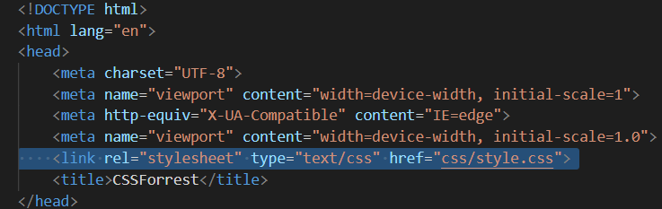
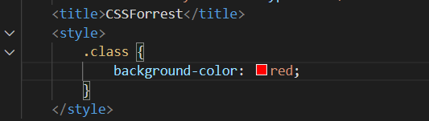
Это менее популярный способ внутренней стилизации, который применяется в особых случаях, когда: А. Базовые стили должны быть моментально интерпретированы браузером до загрузки основных CSS файлов; Б. Когда стили должны быть опционально изменены в процессе работы над веб-сайтом, например, опциональный размер шрифта и другие опции оформления при работе сайта на какой-либо CMS, поддерживающей создание параметров в админ. панели или в других случаях, когда это действительно необходимо.
Пример вывода опции из админки в тело документа:
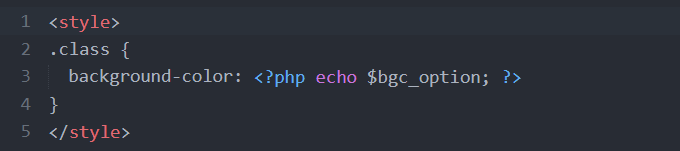
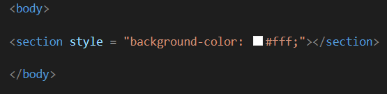
Это довольно топорный способ стилизации элементов на странице, который не стоит использовать в повседневной работе. Только в исключительных случаях, когда это действительно необходимо. Инлайновая стилизация (от слова inline - встроенный) работает только в том элементе, в котором она прописана. Инлайновые стили имеют наибольший приоритет. То-есть если во внешнем файле у вас указана одна картинка для фона, а в инлайновых стилях другая - сработает вторая.
1.2 CSS синтаксис
Как я уже говорил ранее, CSS имеет довольно простой синтаксис. Давайте разберем его.
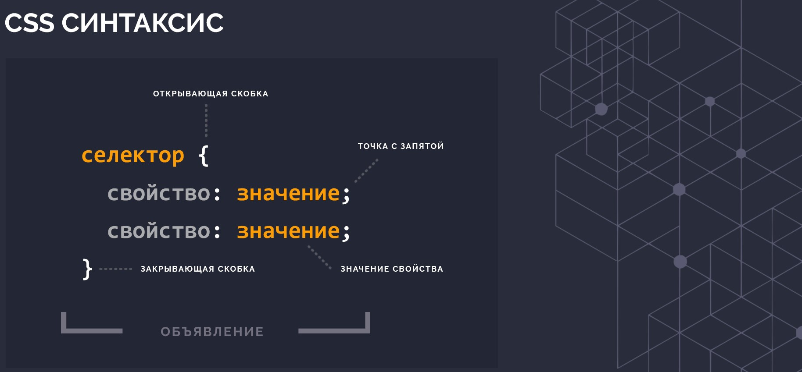
Правила объявлений настолько просты, что их можно описать в одном предложении. Сначала пишется селектор, который выбирает конкретный элемент на странице, после фигурных скобок пишутся свойства со значениями после двоеточия, а сами свойства отделяются друг от друга точкой с запятой. Это всё.
Просто, не правда ли?
Самое сложное в CSS объявлении - селектор.
Вкратце CSS селектор - (от слова select - выбирать) - это конструкция, с которой начинается каждый блок объявлений и которая служит для выборки элемента или однотипных элементов на странице для дальнейшей стилизации.Чаще всего в качестве селектора используется определенный класс тега, например:
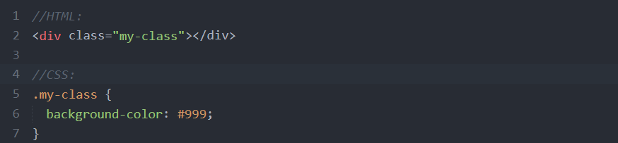
Здесь селектором выступает класс my-class тега div, который получает необходимое оформление в CSS файле. В данном случае фоновый цвет - серый. Соответственно, если на странице есть несколько тегов (не только div) с классом my-class, все эти элементы получат одинаковое оформление - серый фон цвета #999.
1.3 Каскадирование, наследование и приоритет
Понять принцип каскадирования несложно. Давайте взглянем на пример:
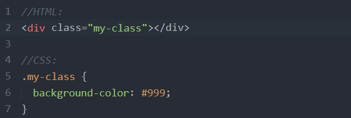
Из примера мы видим, что в CSS написан каскад, в котором класс .parent стоит на первом месте, после него через пробел указан дочерний класс .children, который отвечает уже за стилизацию только дочернего элемента. Дочерний тег обязательно должен быть вложен в тег с классом .parent. Если в HTML документе мы вынесем тег .children из тега div с классом .parent, он потеряет свое оформление, так как каскад уже не будет работать, структура нарушена.
Что мы получим в результате нашего примера. Тег с классом .children получит цвет текста #666, так как имеет более длинный каскад, а .parent покрасится в цвет #999. Родительский класс будет иметь внутренние отступы 10px, в то время, как дочерний этих отступов иметь не будет, так как свойство padding не распространяется на дочерние элементы. Однако если мы уберем color: #666 у селектора .parent .children, то его текст покрасится в цвет родителя color: #999;
Каскадирование и наследование позволяют стилизовать конкретные элементы на странице и определять приоритет применяемых стилей. Давайте рассмотрим иерархию приоритетов.
- Самым высоким приоритетом обладают свойства, в конце объявления которых указана конструкция !important.
Не важно, какую вложенность имеет селектор, каким образом используются стили - инлайново или подключением внешнего файла,
у них будет наибольший приоритет. Я крайне не рекомендую использовать !important при стилизации, так как в процессе поддержки
или даже в процессе разработки в дальнейшем обязательно возникнет путаница, которую спасет только рефакторинг стилей.
Как показывает практика, всегда есть способ не использовать !important.
Пример использования !important:
- Следующим по значимости приоритетом обладают инлайновые стили, прописанные в самом теге через атрибут style, которые мы рассмотрели ранее: <"section style="background-color: #eee;"><"section">
- Стили, заданные в теге style в самом документе имеют меньший приоритет;
- Ещё меньшим приоритетом обладают стили, подключенные к документу как внешний CSS файл посредством тега <"link">
- Самый низкий приоритет, окромя стандартных стилей браузера имеют стили родительских селекторов перед дочерними, например:
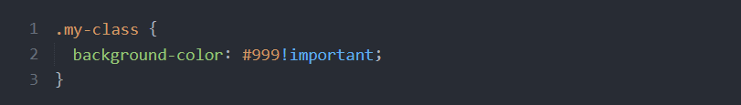
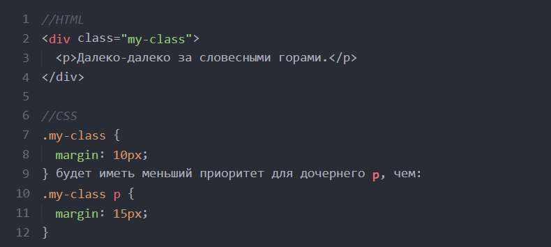
В результате тег <"p">, находящийся в теге с классом .my-class получит значение свойства margin: 15px.
Стоит также отметить, что количество классов или идентификаторов, а также наличие дополнительных псевдоклассов и конструкций в селекторе повышают приоритет для стилизации:
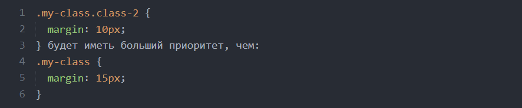
И в завершение по приоритетам важно отметить, что стили, идущие в последующих объявлениях ниже по документу также имеют наибольший приоритет. Например:
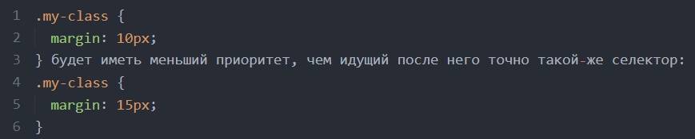
В результате последний селектор в потоке документа получит значение свойства margin: 15px, так как является наиболее приоритетным. Однако если бы селектор первого объявления был длиннее, значния его свойств несомненно бы превалировали.
Что касается наследования, здесь всё просто. Все дочерние элементы наследуют некоторые свойства родителя. Какие именно свойства наследуются предстоит выяснить вам в процессе изучения различных свойств и применении их на практике. Например, цвет текста всегда наследуется потомками, а отступы - нет.
1.4 Рекомендации
Ну и конечно-же мои рекомендации. За всю практику верстки у меня накопились некоторые правила, которыми я с радостью поделюсь.
- Старайтесь использовать только внешние подключаемые CSS файлы. Внутреннюю стилизацию применяйте только если это необходимо для корректного функционирования веб-сайта;
- Старайтесь стилизовать только классы. Не стилизуйте идентификаторы (задаются через id="решетку" и пишутся через #решетку). Старайтесь меньше стилизовать теги без классов. Например, если вы стилизуете тег h3, а в дальнейшем SEO специалист решит, что заголовок здесь не уместен, обычный div должен иметь такие-же свойства с классом заголовка и отображаться также. Как вариант можно сделать дубликаты HTML тегов в классы, например, .h1, .h2, .h3, .footer, .header, .aside и стилизовать их соответствующим образом;
- Старайтесь стилизовать элементы максимально автономно, сокращайте цепочку каскада до одного блока, чтобы было меньше зависимостей от родительских элементов. Это необходимо для максимально эффективного повторного использования блоков на странице и их модификации в других местах верстки. Но без фанатизма. Не стоит задавать отдельные классы каждому тегу в блоке, если не предполагается его автономное использование. Если вы перенесете блок в другое место страницы, он должен отображаться также и не зависеть от родителя. В этом вам поможет использование какой-либо методологии именования классов. Не важно, будет это БЭМ, методология, либо разработанная на основе вашего личного опыта или простые правила, предложенные мной - это лучше, чем называть классы как попало и строить нелогичные и длинные цепочки классов;
- Старайтесь называть классы тегов в зависимости от того, какую функцию выполняет блок, а не от того, какое в нем будет содержание. Например, если у вас есть секция с отзывами в виде карусели, не стоит называть селекторы, используя слова reviews, otzivy и т.д. Лучше назвать carousel-once, если планируется выводит по одному пункту карусели на странице. В дальнейшем, возможно вы будете использовать эту карусель не только для оформления отзывов, а задействуете этот код например, для вывода списка коллег компании. В таком случае наименование класса reviews будет несколько неуместным;
- Самостоятельно экспериментируйте со свойствами. Открывайте CSS справочник и пробуйте. Только так можно наработать опыт, запомнить какое свойство что делает и довести написание стилей документа до автоматизма.